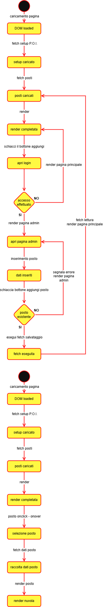
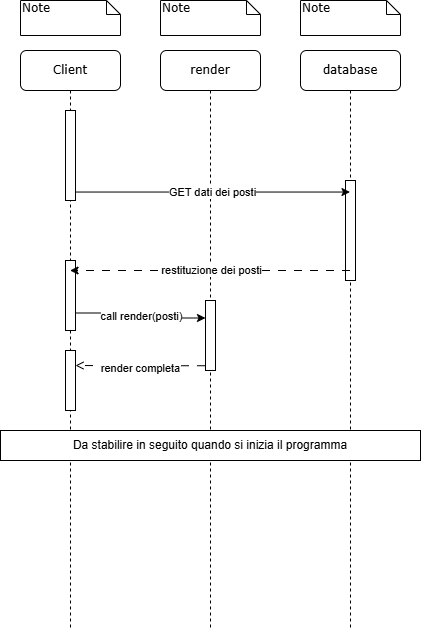
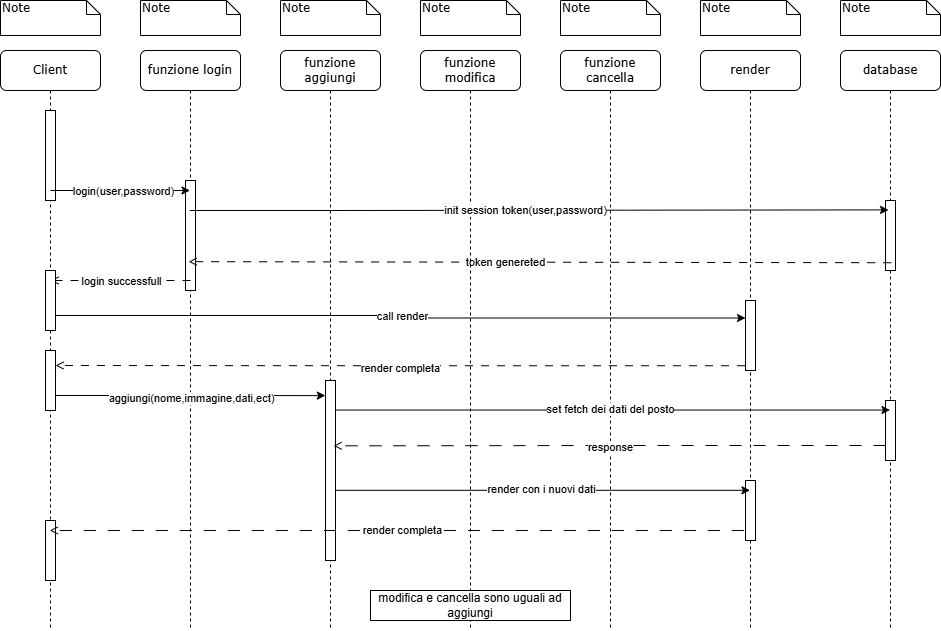
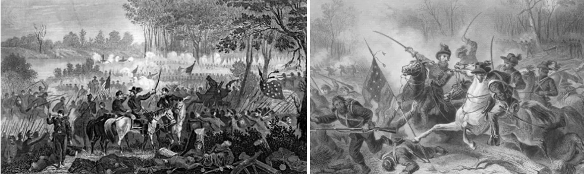
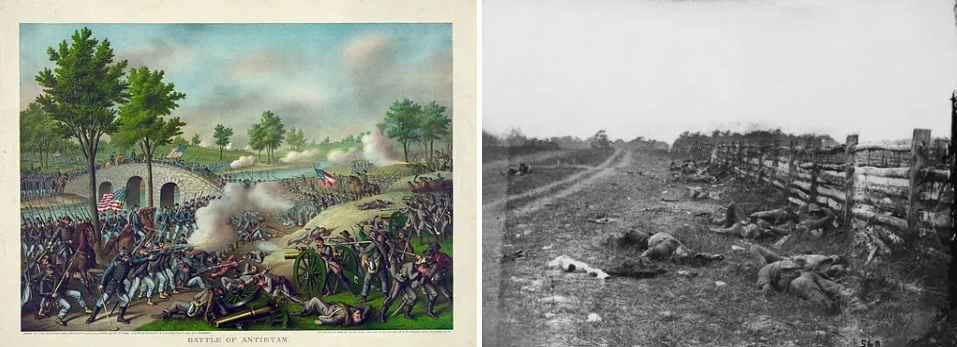
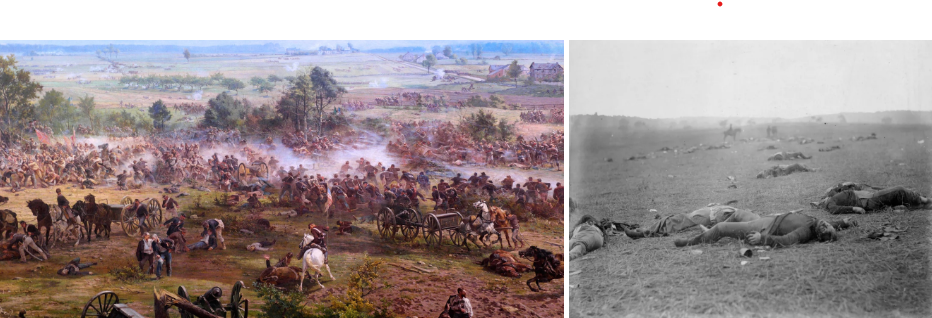
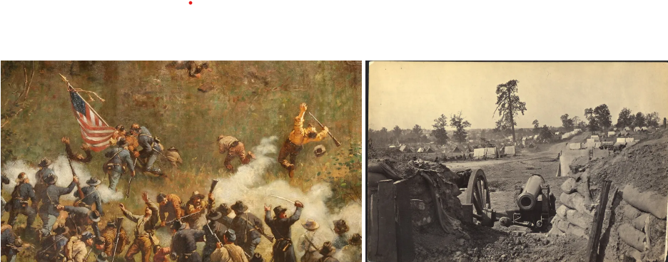
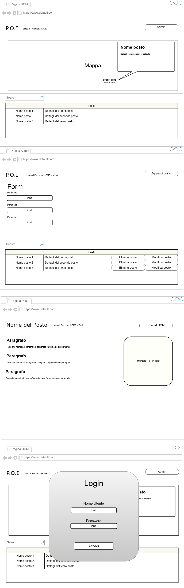

Documentazione
Point of Interest
La realizzazione di un apllicazione che mostri un insieme di punti, legati assieme da un determinato argomento, su una mappa. Nel nostro caso la guerra di Secessione americana.
- Classe/Anno: 5BINF - 24/25
- Author: Baez, Ciolacu & Prostoiu
- Creato: 16 dicembre 2024
- Ultima modifica: 20 gennaio 2025
Architettura informazione
Appena avviata l'apllicazione l'utente avrà davanti una mappa rappresentante l'America del nord, sulla mappa saranno segnati vari posti chiave della guerra di secessione. Quando si puntera con il cursore uno dei punti allora questo mostrerà una veloce introduzione dell'argomento segnato, una volta premuta sul punto invece la schermata si aggiornerà mostrando un carosello con le immagini della determinata battaglia ed una descrizione dettagliata: Si potranno avere infromazioni sulle perdite dello scontro, sulle fazioni, vincitori e conseguenze. Apparirà poi il tasto per entrare nella sezione Admin, da qui si potranno aggiungere, modificare oppure cancellare dei posti.
UML
Qui vanno inseriti i vari diagrammi UML
Diagramma di Casi d'uso
Diagramma di casi d'uso non previsto.
Diagrammi di oggetti

Diagrammi di Stato
Diagrammi di Sequenza
 Contenuti del progetto
La Guerra Civile Americana
Fort Sumter (Carolina del Sud)
Il primo scontro della guerra civile americana avvenne il 12 aprile 1861, segnando l'inizio del conflitto che durò per ben 4 anni. In quella famosa giornata, la guarnigione dell'Unione, guidata con determinazione dal maggiore Robert Anderson, resistette a un intenso e prolungato bombardamento da parte delle forze confederate, sotto il comando del generale P.G.T. Beauregard. Dopo ore di battaglia. Cadde Fort Sumter, diventando un evento simbolico, questo evento aumentò drasticamente la tensione, spingendo il paese inesorabilmente verso una guerra totale che avrebbe segnato un'epoca.
Conseguenze:
La resa di Fort Sumter ebbe conseguenze enormi:
- Inizio della Guerra Civile: L'attacco a Fort Sumter segnò ufficialmente l'inizio della Guerra Civile Americana. Gli eventi successivi portarono all'arruolamento di soldati da entrambe le parti.
- Mobilitazione Nazionale: Dopo la notizia della resa, Lincoln chiamò 75.000 volontari per sopprimere la ribellione, portando a una rapida mobilitazione delle forze dell'Unione.
- Espansione del Conflitto: La vittoria confederata a Fort Sumter galvanizzò gli stati del Sud e portò altri stati a unirsi alla Confederazione.
- Simbolismo: Fort Sumter divenne un simbolo della determinazione dell'Unione e della lotta per preservare la nazione.
Riflessioni Finali
La battaglia di Fort Sumter è un evento cruciale nella storia americana non solo per il suo significato militare ma anche per le sue implicazioni politiche e sociali. Ha segnato l'inizio di un conflitto devastante che avrebbe portato alla fine della schiavitù negli Stati Uniti e a una nuova definizione dell'unità nazionale.

La Battaglia di Shiloh (Tennessee)
Venne combattuta tra il 6 e il 7 aprile del 1862 fu una delle prime battaglie significative, dimostrò che la guerra sarebbe stata lunga e sanguinosa. Le forze dell'Unione, guidate da Ulysses S. Grant, respinsero un attacco confederato a sorpresa. La battaglia evidenziò la necessità di una migliore organizzazione e preparazione da entrambe le parti. Il 6 aprile, le forze confederate lanciarono un attacco a sorpresa, spingendo le truppe unioniste a ritirarsi verso il fiume Tennessee. Le truppe unioniste, comandate dai generali Benjamin Prentiss e W.H.L. Wallace, riuscirono a resistere vicino alla chiesetta di Shiloh, dove ci furono combattimenti intensi. Vista la scarsa organizzazione tra le forze confederate e la valutazione sbagliata della situazione,l’efficacia dell'attacco fu molto ridotta. La prima giornata si concluse con pesanti perdite per entrambe le parti. Nella notte tra il 6 e il 7 aprile, Grant ricevette rinforzi dall'Armata dell'Ohio. il 7 aprile, le truppe unioniste lanciarono un contrattacco decisivo e le truppe confederate, furono costrette a ritirarsi. La battaglia si concluse con una vittoria dell'Unione.
Conseguenze:
La battaglia di Shiloh portò a oltre 23.000 soldati tra morti e feriti, rendendola una delle battaglie più sanguinose della guerra fino a quel momento. Le conseguenze furono significative:
- Controllo Strategico: La vittoria dell'Unione a Shiloh consentì a Grant di continuare la sua avanzata nel sud e contribuì al controllo dell'importante fiume Mississippi.
- Cambiamento di Strategia: La battaglia evidenziò la brutalità del conflitto e la necessità di una pianificazione strategica più rigorosa da parte delle forze unioniste.
- Impatto Morale: Le pesanti perdite subirono un impatto morale significativo su entrambe le parti, dimostrando che la guerra sarebbe stata lunga e sanguinosa.
Riflessioni Finali
La battaglia di Shiloh è spesso ricordata come un punto di svolta nella Guerra Civile Americana. Ha messo in evidenza non solo l'intensità della guerra ma anche la determinazione delle forze unioniste a perseverare nonostante le difficoltà iniziali. Questo scontro ha segnato l'inizio di una serie di campagne decisive nel teatro occidentale della guerra e ha contribuito a plasmare il corso del conflitto negli anni successivi.
Bull Run (Manassas, Virginia)
Qui vennero combattute due importanti battaglie, entrambe vinte dai confederati: La prima il 21 luglio del 1861, questa fu la prima grande battaglia dello scontro, il generale del lato confederato Thomas Jackson emerse come eroe prendendo il soprannome di “Stonewall”. L'esercito dell'Unione fu lento nel posizionarsi, dando il tempo ai rinforzi confederati di arrivare via ferrovia. Entrambi gli schieramenti disponevano di circa 18.000 soldati, mal addestrati e mal guidati. La battaglia portò una disordinata ritirata delle forze dell'Unione dopo lo scontro. La seconda battaglia consolidò il controllo confederato sulla regione e rafforzò la reputazione del generale Robert E. Lee.
Conseguenze:
La prima battaglia di Bull Run ebbe diverse conseguenze significative:
- Impatto Morale: La vittoria confederata sollevò il morale del Sud e dimostrò che la guerra sarebbe stata lunga e difficile. Al contrario, la sconfitta dell'Unione portò a una crisi di fiducia nei leader militari dell'Unione.
- Mobilitazione delle Forze: Dopo la battaglia, entrambi i lati iniziarono a mobilitare più soldati e a prepararsi per un conflitto prolungato.
- Rivalutazione delle Strategie: La sconfitta portò a una rivalutazione delle strategie militari da parte dell'Unione, culminando in un maggiore impegno nella formazione e nell'organizzazione delle truppe.
Riflessioni Finali
La battaglia di Bull Run è spesso vista come un punto di svolta nel conflitto. Ha dimostrato che né l'Unione né i Confederati erano pronti per la guerra totale che sarebbe seguita. Questo scontro ha segnato l'inizio di una lunga serie di battaglie sanguinose e ha contribuito a plasmare le strategie militari e politiche degli anni successivi nella Guerra Civile Americana.

Antietam (Maryland)
La battaglia di Antiem, conosciuta anche come battaglia di Sharpsburg, venne combattuta il 17 settembre del 1862, tra l'esercito della Virginia del nord, comandata dal generale Robert Lee e l’armata del potomac guidata dal generale George McClellan. Lo scontro vide L’Unione prevalere fermando l’avanzata confederata nel nord, offrì anche a Lincoln la possibilità di emettere la Proclamazione di Emancipazione. Questo fu uno dei giorni più sanguinosi di tutta la storia degli Stati Uniti, ci furono 22.717 morti.
Conseguenze:
La battaglia di Antietam si concluse senza una chiara vittoria per nessuna delle due parti, ma con Lee costretto a ritirarsi in Virginia. Le conseguenze furono significative:
- Proclamazione di Emancipazione: La battaglia fornì a Lincoln l'opportunità di annunciare la Proclamazione di Emancipazione, che liberava gli schiavi nei territori ribelli e trasformava la guerra in una lotta per la libertà.
- Impatto Morale: Sebbene non ci fosse una vittoria decisiva, la ritirata delle forze confederate fu vista come un successo morale per l'Unione.
- Rivalutazione della Strategia: La battaglia evidenziò i limiti del comando di McClellan e portò a una crescente pressione affinché assumesse un approccio più aggressivo nel conflitto.
Riflessioni Finali
La battaglia di Antietam è spesso considerata un punto di svolta nella Guerra Civile Americana. Ha dimostrato che l'Unione poteva resistere anche sul fronte orientale e ha segnato un cambiamento significativo nella direzione della guerra. Gli eventi che seguirono questa battaglia avrebbero avuto un impatto duraturo sulla storia degli Stati Uniti e sul futuro della schiavitù nel paese.
Gettysburg (Pennsylvania)
la battaglia di Gettysburg fu un momento di svolta della guerra civile americana, combattuta dal 1° al 3 luglio 1863, si concluse con una decisiva vittoria dell'Unione. In quei tre giorni intensi, il generale George Meade riuscì a respingere l’assalto delle forze confederate guidate dal generale Robert E. Lee, infliggendo loro una sconfitta cruciale. Questo evento segnò l'inizio del declino militare dei Confederati, che da quel momento iniziarono a perdere terreno. La battaglia non solo ebbe un'importanza strategica e militare, ma ispirò anche il celebre discorso di Gettysburg di Abraham Lincoln.
Conseguenze:
La battaglia di Gettysburg ebbe conseguenze significative:
- Perdite Umanitarie: Circa 50.000 soldati furono uccisi, feriti o dispersi durante i tre giorni di combattimenti, rendendo Gettysburg una delle battaglie più sanguinose della guerra.
- Punto di Svolta: La vittoria dell'Unione fermò l'invasione del Nord da parte dei Confederati e rappresentò un punto di svolta nel conflitto, poiché Lee non riuscì più a lanciare offensive significative nel Nord.
- Proclamazione di Emancipazione: La vittoria a Gettysburg rafforzò la posizione dell'Unione e consentì a Lincoln di annunciare la Proclamazione di Emancipazione con maggiore autorità.
- Impatto Morale: La vittoria dell'Unione sollevò il morale delle truppe unioniste e del pubblico, mentre la sconfitta confederata segnò un duro colpo per la causa sudista.
Riflessioni Finali
La battaglia di Gettysburg è spesso considerata il culmine della Guerra Civile Americana e ha avuto un impatto duraturo sulla storia degli Stati Uniti. Ha dimostrato che l'Unione era capace di resistere alle offensive confederate e ha segnato l'inizio della fine per gli Stati Confederati d'America.
Vicksburg (Mississippi)
L’assedio di Vicksburg, che si svolse dal 18 maggio al 4 luglio 1863, fu uno degli eventi più significativi della guerra civile americana, perché diede all’Unione il controllo completo del fiume Mississippi; dividendo di fatto il territorio della Confederazione in due, rendendo difficile le comunicazioni. Il generale Ulysses S. Grant fu il protagonista dell’assedio, mettendo in ginocchio le forze confederate, costringendole infine alla resa. La caduta di Vicksburg segnò un momento cruciale nel conflitto, poiché garantì all'Unione un vantaggio strategico duraturo. Questa vittoria, unita a quella quasi contemporanea di Gettysburg, rappresenta un vero punto di svolta, sia militare che morale, nel lungo e sanguinoso percorso della guerra. [766 morti dell’unione e 3202 confederati]
Conseguenze:
La battaglia di Vicksburg ebbe conseguenze significative:
- Controllo del Fiume Mississippi: Con la cattura di Vicksburg, l'Unione ottenne il controllo totale del fiume Mississippi, dividendo gli stati confederati in due e interrompendo le linee di rifornimento.
- Impatto Morale: La vittoria dell'Unione a Vicksburg fu un colpo devastante per la Confederazione e sollevò il morale delle forze unioniste.
- Strategia Militare: La vittoria consolidò la reputazione di Grant come uno dei migliori comandanti dell'Unione e portò a una maggiore aggressività nelle campagne future.
Riflessioni Finali
La battaglia di Vicksburg è spesso considerata un punto di svolta nella Guerra Civile Americana. Ha dimostrato l'importanza della strategia militare e della logistica nel conflitto, oltre a segnare un cambiamento significativo nell'equilibrio delle forze tra l'Unione e la Confederazione.
Chattanooga (Tennessee)
Nel novembre 1863, l'Unione ottenne un'importante vittoria che segnò una svolta nella guerra civile americana, aprendo la strada all'invasione del sud profondo. Le battaglie di Lookout Mountain e Missionary Ridge furono momenti cruciali di questo successo, dimostrando chiaramente il valore strategico del controllo delle vie ferroviarie e delle linee di comunicazione vitali per il movimento delle truppe e dei rifornimenti. Questi scontri non solo misero in evidenza la superiorità organizzativa e tattica delle forze dell’Unione, ma sottolineano anche l’importanza di coordinare attacchi su più fronti per spezzare le difese confederate. La vittoria consolidò ulteriormente la posizione del generale Ulysses Grant come leader militare di spicco dell'Unione, aprendo la strada alla sua nomina come comandante generale di tutte le forze unioniste. Questo trionfo non fu solo un passo avanti strategico, ma anche un forte segnale morale, dimostrando che la Confederazione stava perdendo il controllo delle regioni centrali del sud. [700 morti dell’unione, 1000 morti confederati]
Conseguenze:
La battaglia di Chattanooga ebbe conseguenze significative:
- Controllo Strategico: La vittoria dell'Unione consentì a Grant di ottenere il controllo della ferrovia e delle linee di rifornimento nel sud, facilitando ulteriori operazioni militari.
- Consolidamento del Comando: Grant consolidò la sua reputazione come uno dei migliori generali dell'Unione e fu successivamente nominato comandante supremo delle forze unioniste.
- Preparazione per Atlanta: La vittoria a Chattanooga preparò il terreno per la campagna di Atlanta, che sarebbe stata cruciale per l'esito finale della guerra.
Riflessioni Finali
La battaglia di Chattanooga rappresenta un momento decisivo nella Guerra Civile Americana. Ha dimostrato l'efficacia delle strategie militari di Grant e ha segnato un cambiamento significativo nell'equilibrio delle forze tra l'Unione e la Confederazione nel Teatro Occidentale.
Atlanta (Georgia)
La cattura di Atlanta il 2 settembre 1864 da parte del generale William Tecumseh Sherman fu cruciale per la strategia dell'Unione e influenzò le elezioni presidenziali di quell'anno. La "Marcia verso il Mare" di Sherman, iniziata poco dopo, devastò le infrastrutture confederate, accelerando la fine della guerra[unione: 4.423 morti, 22.822 feriti e 4.442 dispersi, confederati: 37.000].
Conseguenze:
La battaglia di Atlanta ebbe conseguenze significative:
- Impatto Morale: La vittoria dell'Unione a Atlanta sollevò il morale delle truppe unioniste e della popolazione civile, dimostrando la capacità dell'Unione di infliggere colpi decisivi alla Confederazione.
- Rielezione di Lincoln: La vittoria contribuì alla rielezione del presidente Abraham Lincoln nel novembre del 1864, poiché dimostrava progressi tangibili nella guerra.
- Strategia della Terra Bruciata: Dopo la cattura della città, Sherman adottò la strategia della terra bruciata durante la sua marcia verso il mare, distruggendo risorse e infrastrutture lungo il cammino per minare la capacità di resistenza del Sud.
Riflessioni Finali
La campagna di Atlanta rappresenta un punto cruciale nella Guerra Civile Americana. Ha dimostrato l'efficacia delle strategie militari di Sherman e ha segnato un cambiamento significativo nell'equilibrio delle forze tra l'Unione e la Confederazione. La cattura di Atlanta non solo influenzò il corso della guerra, ma anche l'atteggiamento dell'opinione pubblica nei confronti del conflitto.
Fort Wagner (Carolina del Sud)
Famoso per l'assalto del 54º reggimento di fanteria del Massachusetts, uno dei primi reggimenti afroamericani, il 18 luglio 1863. Sebbene l'attacco si concluse con una sconfitta, il coraggio dimostrato dai soldati afroamericani contribuì a cambiare la percezione pubblica del loro ruolo nella guerra e a incoraggiare l'arruolamento di altri reggimenti afroamericani.[49 morti, 123 feriti e 167 dispersi o prigionieri]
Conseguenze:
Nonostante la sconfitta, la battaglia di Fort Wagner ebbe diverse conseguenze significative:
- Impatto Morale: La partecipazione del 54° Massachusetts dimostrò il coraggio e la determinazione dei soldati afroamericani, contribuendo a cambiare le percezioni riguardo alla loro capacità di combattere.
- Riconoscimento: La battaglia portò a un maggiore riconoscimento dell'importanza delle truppe afro americane nell'esercito dell'Unione e contribuì all'arruolamento di ulteriori soldati afroamericani nelle forze unioniste.
- Simbolismo: La battaglia divenne un simbolo della lotta per la libertà e i diritti civili, rappresentando il desiderio degli afroamericani di combattere per la loro libertà e per l'Unione.
Riflessioni Finali
La battaglia di Fort Wagner è spesso ricordata non solo per il suo significato militare ma anche per il suo impatto sociale. Ha segnato un passo importante verso l'inclusione dei soldati afroamericani nell'esercito unionista e ha contribuito a cambiare le dinamiche della guerra civile americana.

Appomattox Court House (Virginia)
Qui, il 9 aprile 1865, il generale Robert E. Lee si arrese al generale Ulysses S. Grant, segnando la fine effettiva della guerra. L'incontro tra i due generali fu caratterizzato da rispetto reciproco e diede inizio al processo di riconciliazione nazionale. L'accordo permise ai soldati confederati di tornare a casa con i loro cavalli, ponendo fine a quattro anni di sanguinose ostilità.
Conseguenze:
La resa di Lee a Appomattox ebbe diverse conseguenze significative:
- Fine della Guerra Civile: La resa segnò la fine effettiva della Guerra Civile Americana. Sebbene ci fossero ancora alcuni scontri sporadici in altre regioni, la resa di Lee rappresentò il crollo dell'armata confederata.
- Impatto Morale: La resa fu un momento simbolico che portò alla celebrazione della vittoria dell'Unione e alla riflessione sulla necessità di ricostruire il paese dopo anni di conflitto.
- Riconciliazione: Grant e Lee hanno mostrato un esempio di riconciliazione tra Nord e Sud, gettando le basi per il processo di ricostruzione che seguì la guerra.
Riflessioni Finali
La battaglia di Appomattox Court House è spesso considerata uno dei momenti più significativi nella storia americana. Ha rappresentato non solo la fine della guerra ma anche l'inizio di un lungo processo di guarigione e riconciliazione tra le due parti del paese.
Wireframes
Il progetto
In questa sezione vanno inserite ulteriori informazioni aggiuntive (es. credenziali) ed il link al progetto